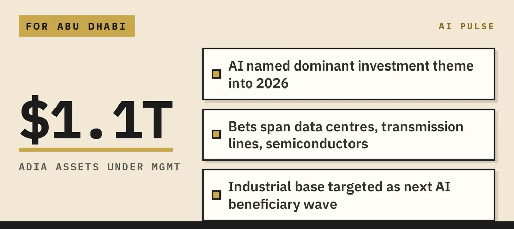
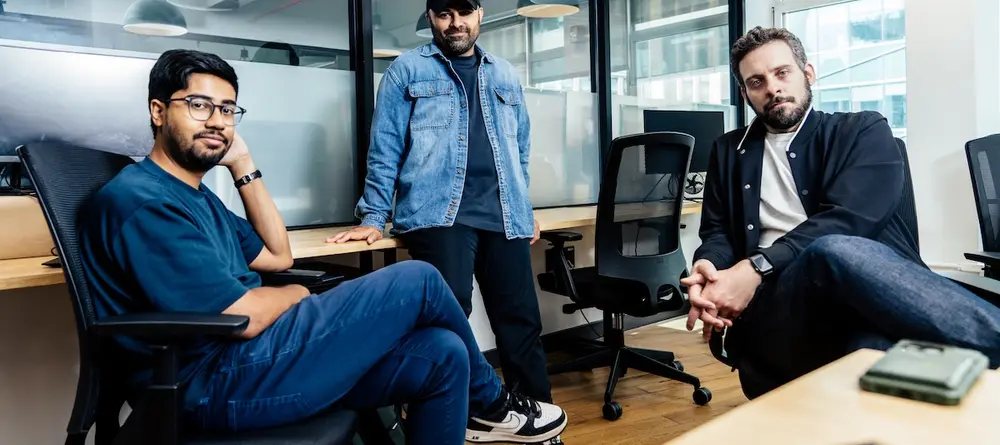
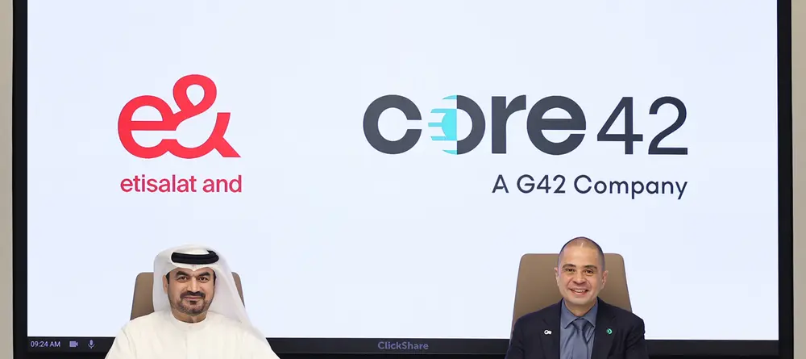
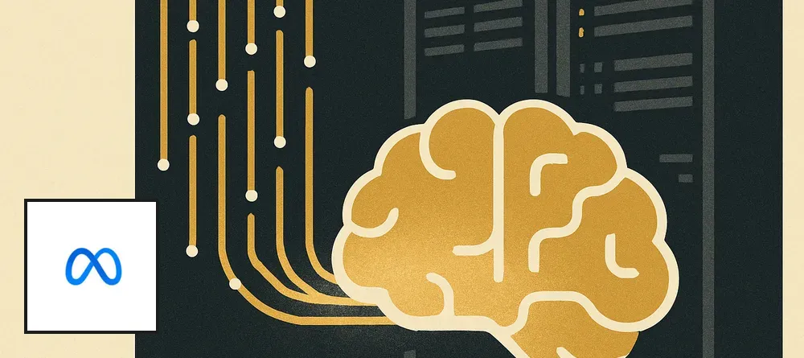
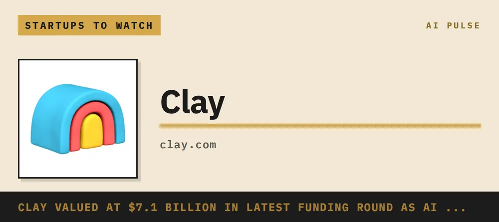
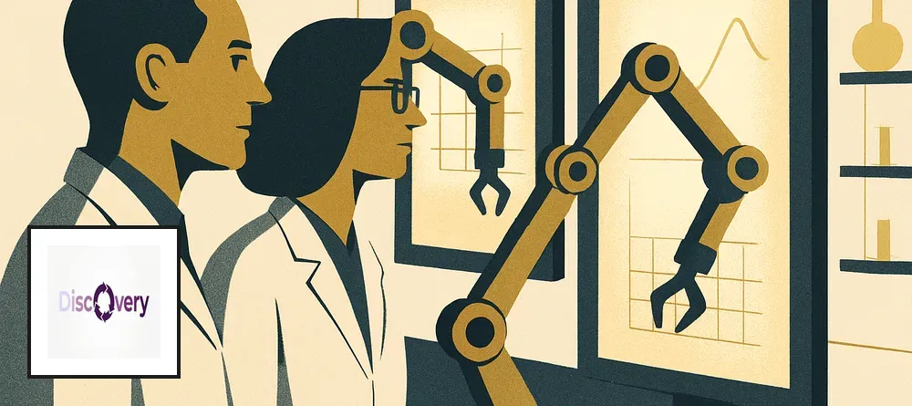
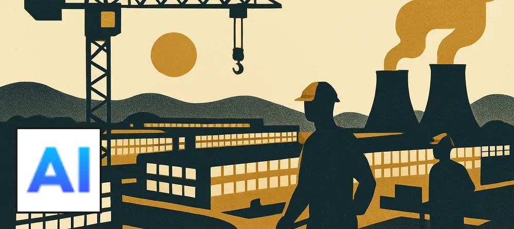

Abu Dhabi has set a 2027 deadline to become the world's first AI-native government — integrating more than 40 public entities into a single AI-driven ecosystem, with over 100 live use cases already running and a $3.54 billion investment program behind it. The Ai Everything summit this week put the blueprint on the global stage, with officials framing it explicitly as an open invitation for the world to evaluate AI-enabled governance at scale. For peer capitals watching from Riyadh to Singapore, Abu Dhabi is no longer describing a vision — it is showing a working model.
The National (UAE)Abu Dhabi's push to become the world's first AI-native government by 2027 took centre stage at the Ai Everything summit this week, where Wesam Lootah of GovDigital outlined a $3.54 billion program already backing more than 100 live AI deployments across public services, banking, health care, energy, and education. The ambition is structural: more than 40 government entities are being knitted into a single AI-driven ecosystem — not piloting tools in silos, but redesigning how the state itself operates. Officials were deliberate in framing Abu Dhabi not as a case study but as a replicable blueprint, inviting other governments to scrutinise what scaled intelligent governance actually looks like in practice. The summit's 180 speakers also tackled AI safety and the gender gap in AI talent — signals that Abu Dhabi is positioning responsible deployment as a feature of the model, not an afterthought. With governments and corporations globally racing to show measurable AI returns, Abu Dhabi is now one of the few with a hard deadline, a price tag, and working infrastructure to point to.
Three moves this week — the 2027 AI-native government target, Mubadala's Together AI partnership, and G42's Inception42 hiring for a shared agentic platform — form a single coordinated play. Abu Dhabi is not accumulating AI assets at random; it is assembling every layer of the stack: capital, infrastructure, model access, and now the deployment platform that ties it all together. Most observers are still reading these as separate deals. They are not.
The DeskThree stories this week look unrelated. Together they reveal something important about how Abu Dhabi is building.
The headline number is $3.54 billion committed to making the UAE government AI-native by 2027 — 40-plus government entities, one integrated ecosystem, over 100 live use cases already in production. That is an aggressive timeline for any government on earth. The natural question is not whether the ambition is real; it clearly is. The question is what the bottleneck is.
The bottleneck is not capital, and it is not chips. Mubadala's tie-up with Together AI — which will establish a physical presence in Abu Dhabi — signals that the infrastructure and open-model access layer is being locked in with a partner that specialises in scalable, efficient inference rather than proprietary frontier models. Together AI is not OpenAI; it is the platform that lets you run and fine-tune frontier-class models at scale without being dependent on a single API. That distinction matters enormously for a government that cannot afford vendor lock-in across 40 ministries.
What most observers are missing is the third piece: G42's Inception42 is actively hiring a Director of Product Technology to lead what it explicitly calls a "shared agentic-AI platform" — a horizontal layer that sits across all of G42's AI products and translates model capability into deployable enterprise tools. This is not a research role. It is a productisation role. The platform they are building is, in effect, the operating system for Abu Dhabi's AI-native government. The 2027 deadline only makes sense if that platform is 12 months from being production-ready — which means the architectural decisions being made right now are the ones that will define how the UAE government works for the next decade.
The thing everyone is getting wrong is the assumption that Abu Dhabi is a buyer in this story. It is increasingly a builder. The Together AI deal brings open-model infrastructure. Inception42 builds the agentic deployment layer on top. The government mandate creates the guaranteed demand and the real-world data that makes the platform defensible. That is a vertically integrated AI stack, assembled across three different announcements in the same week, and it is pointed at a specific deadline.
For a decision-maker watching this from inside the ecosystem, the implication is concrete. The platform layer — Inception42's shared agentic infrastructure — is the single highest-leverage point in the entire program. It is also the piece most likely to fall behind, because building horizontal platforms that serve 40 different government entities with 40 different workflows is genuinely hard. The risk is not ambition; it is integration complexity at speed. The window to influence the architecture of that platform — through partnership, investment, or talent — is right now, not after the 2027 deadline focuses minds.
Watch Inception42's hiring pace and any announcement of a formal platform SDK or API for government partners. That will signal whether the shared agentic layer is on track or whether the 2027 target is about to get quietly rebased.
Two AI coding-agent startups, Factory and Cognition, have gone public with accusations that shared advisers are playing both sides — a rare, messy conflict-of-interest fight playing out in the open. The spat signals how ferociously contested the agentic coding space has become, with companies now treating adviser networks as competitive weapons. For leaders watching this sector, the drama is less about gossip and more about who is quietly backing whom in the race to own software development.
via The NeuronFactory and Cognition, two of the more closely watched startups building AI agents that write and ship code autonomously, traded public accusations in early October over advisers who appear to have ties to both companies simultaneously. The specifics of who advised whom remain contested, but the willingness of both sides to air it publicly is itself notable — this is not how early-stage startups typically behave unless the stakes feel high. The agentic coding market has attracted serious capital and serious attention from the hyperscalers, and the adviser networks around these companies carry real intelligence about strategy, customers, and fundraising pipelines. A shared adviser is, in that context, a potential information leak. The incident is worth watching not for the drama but for what it reveals: the field is consolidating around a small number of credible players, and the competitive pressure is already intense enough to produce public conflict.
AI has moved deep into U.S. healthcare billing — not to treat patients, but to set charges, process insurance payments, and deny claims. Blue Cross Blue Shield estimates AI-assisted billing has already added nearly $1 billion in questionable extra costs for patients. The worry is not just the money: hospitals and insurers are now locked in an AI arms race on paperwork, each deploying models to outmanoeuvre the other — with patients caught in the middle and footing the bill.
CNBCA CNBC investigation lays out how AI has quietly colonised the business side of U.S. healthcare — pricing algorithms, claims-processing bots, and automated denial engines now sit between patients and their coverage. Blue Cross Blue Shield puts the tab at close to $1 billion in extra patient costs, driven by AI systems that flag diagnoses and inflate or dispute charges at scale. Clinicians get some relief — AI handling admin paperwork does ease burnout — but the net effect at the system level is an escalating arms race: hospital AI versus insurer AI, with no referee. The loser, consistently, is the patient. For Gulf health systems now integrating AI into hospital operations, the lesson is pointed: if AI tools are procured from the billing side first and the clinical side second, the same dynamic takes hold. Abu Dhabi's largely public-payer model offers a structural advantage — but only if procurement rules ringfence AI use cases around outcomes rather than revenue optimisation.
Tencent has quietly locked in 100,000 GPUs through a five-year lease with Oracle Cloud, housed in Southeast Asian data centres — a deal worth roughly $7 billion with about 30% paid upfront. The move is a direct response to U.S. export controls that bar Tencent from accessing the same chips inside China. ==The deal shows that export controls are reshaping where AI compute physically lives__, not just who can buy it — and Oracle is emerging as an unlikely landlord of choice for Chinese tech giants locked out of frontier hardware at home.
Data Center DynamicsTencent has signed a five-year, roughly $7 billion lease with Oracle Cloud for access to 100,000 GPUs — chips it cannot legally import into China — hosted across Oracle's Southeast Asian data centres. Around 30% of the deal value was paid upfront, signalling just how seriously Tencent is betting on offshore compute to power its AI models and agentic tools. The timing is notable: Tencent recorded its first negative quarterly cash flow in over a decade in Q2 2026, yet it is still writing nine-figure cheques for GPU access abroad. The arrangement reveals a fast-emerging playbook among Chinese technology companies — lease frontier hardware through a Western cloud provider in a third country, and route AI workloads through it. For the Gulf, the parallel is sharp: Southeast Asia's data centre hubs are capturing investment that could equally flow to the UAE, which sits between China, Europe, and South Asia and already holds significant compute infrastructure through G42 and its partners.
Google pushed Gemini into schools nationwide, and the early results are uncomfortable reading. An eighth-grader in Pennsylvania leaned on the AI for math and writing — and her grades fell, particularly in math. The WSJ's wider investigation finds that cognitive and emotional dependence on AI tools is spreading in classrooms, and measurable learning gains are not materialising. Teacher training is patchy, student reliance is deepening, and long-term skills development is quietly eroding.
Wall Street JournalGoogle rolled Gemini out across American schools at scale — and the WSJ's October investigation is one of the first major-outlet reckonings with what actually happened. The headline finding: efficiency gains for teachers and administrators, but no consistent improvement in student learning outcomes, and in some cases clear regression. The Pennsylvania case — a student whose math grades declined after she began using AI for homework — is illustrative of a pattern the report traces across multiple schools. Researchers and educators flag two distinct risks: cognitive dependence, where students stop practising the reasoning they are supposed to be building, and emotional dependence, where AI becomes a social and motivational crutch. Teacher training has not kept pace with the rollout, meaning most classrooms lack clear protocols for when and how AI should be used. For policymakers designing national AI-in-education programmes — including in the Gulf, where ambitions are high and timelines are short — the US experience is an early warning: deployment without a learning design framework may actively harm the students it is meant to help.
Google has launched Gemini 4 Argon, its most capable model yet, rolling out first to select enterprise and cybersecurity partners. The model sets a new record on real-world software engineering benchmarks and ties for first place in cybersecurity evaluations, with strong results in finance and legal work too. Google is now directly targeting the professional and security sectors — the verticals where AI adoption moves the most money and carries the highest stakes. The timing, alongside public AI-safety commitments from CEO Sundar Pichai, signals Google is playing offence on both capability and credibility.
CNBCGoogle launched Gemini 4 Argon on 30 September, positioning it as its most advanced model to date and rolling it out initially to a curated set of cyber and enterprise partners rather than the general public. The model claims a new record for real-world software engineering tasks and a joint first place in cybersecurity evaluations — two domains where governments and large institutions are actively shopping for AI solutions. Performance in finance and legal work is also reported to be significantly ahead of prior Gemini releases. The controlled rollout strategy mirrors how frontier labs are increasingly treating their most capable models: as strategic assets offered to vetted partners before broad release. CEO Sundar Pichai accompanied the launch with public AI-safety commitments, a move that appears designed to ease regulatory concern while competing directly with OpenAI and Anthropic for high-value institutional contracts. For Gulf governments building sovereign AI stacks, Argon's cybersecurity and professional-task capabilities make it a serious candidate for evaluation alongside existing partnerships.
South Korea's exports crossed $120 billion in September 2026 — a national record — with semiconductors alone hitting $60.3 billion, triple the level of a year earlier. Samsung and SK Hynix are the engines, riding a wave of AI-driven chip orders that shows no sign of slowing into year-end. Korea's monthly trade data is one of the most reliable early signals for where global AI investment is actually flowing, and right now the signal is screaming demand.
Wall Street JournalSouth Korea's total exports cleared $120 billion in September 2026, a new national record, with semiconductors contributing $60.3 billion — three times the figure from September 2025. The jump is almost entirely attributable to AI: data centres around the world are consuming memory chips, logic chips, and advanced packaging at a pace that has overwhelmed earlier forecasts. Samsung Electronics and SK Hynix both reported record revenues in Q2 2026 and are guiding higher for the rest of the year. Korea's export figures are watched closely by economists as one of the first hard data points each month on the health of global tech spending, and September's numbers leave little room for doubt: the AI infrastructure buildout is accelerating, not plateauing. For a region like the Gulf that is committing tens of billions to data centres and sovereign compute, the implication is straightforward — the chips needed to fill those centres are scarcer and more strategically valuable than ever.
Dots is a customizable personal AI agent built on GPT-6 Astra that handles tasks through natural conversation and app integrations. It features a visually distinctive, blob-like animated character with personality, designed for everyday consumer use.
The VergeUnveiled at OpenAI's DevDay 2026, Dots is OpenAI's first serious swing at a consumer-facing AI agent — one designed to feel approachable rather than utilitarian. It runs on GPT-6 Astra and presents itself as a customizable "blob" character with eyes and personality, clearly borrowing some visual charm from sci-fi and animation. The direct competitive target is Meta's Muse AI, which is free — making OpenAI's pricing and value proposition a central question for adoption. With the broader AI agent race heating up, Dots represents OpenAI's bet that users will pay for a polished, integrated agent experience over a free but possibly less capable alternative.

Mubadala has signed a partnership with California-based Together AI — a platform that lets developers run and fine-tune open-source AI models — to explore investment opportunities and grow the AI ecosystem in the UAE. Together AI will open an office in Abu Dhabi, giving regional developers direct access to its infrastructure. The deal sits inside Mubadala's $385 billion portfolio and aligns with the UAE's AI 2031 strategy and plans for a 5 GW AI data-centre campus. Abu Dhabi is now systematically anchoring the open-model developer stack to its own soil, not just funding it from afar.
The National (UAE)Mubadala and Together AI have agreed to jointly explore AI investments in the UAE and expand Together AI's footprint across the region, with Together AI committing to establish a physical presence in Abu Dhabi. Together AI is a developer-facing platform that makes it easier to access, run, and fine-tune open-source AI models — think of it as the plumbing beneath a fast-growing layer of AI startups. The move is part of a broader UAE push that includes a planned 5 GW AI data-centre campus in Abu Dhabi, and fits neatly inside Mubadala's $385 billion multi-sector portfolio, which has been tilting toward AI, renewables, and advanced tech. The partnership also directly supports the UAE's National AI Strategy 2031, which targets a top-tier global ranking and full AI integration across government and industry. What distinguishes this deal from a typical investment announcement is the physical anchor: landing an AI platform operator in Abu Dhabi creates local developer density, not just a line item on a fund balance sheet. Mubadala joins G42 and MGX in deploying sovereign capital as an ecosystem-building tool rather than a purely financial one.
Modulate, a Boston startup founded by MIT alums, has raised $25M to expand its voice intelligence platform — a suite of small, specialised models that handle transcription, emotional analysis, deepfake detection, and policy enforcement for voice agents in regulated industries. The raise brings its total funding to roughly $66M. The real pitch is trust infrastructure for AI voice — the layer that tells enterprises whether a voice agent is compliant, human-sounding, or being spoofed.
TechCrunchModulate was founded in 2017 by MIT alumni Mike Pappas and Carter Huffman, originally focused on voice modulation for gaming. It has since pivoted toward enterprise voice intelligence: a platform of small, task-specific models that sit underneath voice agents and handle transcription, emotional tone analysis, AI music and deepfake detection, and real-time policy enforcement. The $25M round was led by Future Ventures, with Hyperplane and Lakestar participating, and follows roughly $41M in prior funding — implying a pre-money valuation around $170M. The investment reflects growing investor conviction that regulated industries — finance, healthcare, legal — will need a compliance and authenticity layer before they trust AI voice agents with anything consequential. Modulate's bet is that selling the safety rails is more durable than selling the voice itself. For a region like the Gulf, where government voice services and Arabic-language AI agents are expanding fast, the deepfake-detection and policy-enforcement angle is directly relevant.

Roche has told investors it is building fully autonomous AI-driven research labs, targeting "AI independence" across its drug discovery and development pipeline. The company plans to redeploy roughly **2 billion Swiss francs** in R&D savings — unlocked by automation — into broader programs and productivity rather than pocketing them. The lab itself becomes the scientist, running experiments, reading results, and iterating without waiting for human input. For pharma and sovereign health strategies alike, this is the clearest signal yet that AI is about to collapse drug timelines.
ReutersAt its investor day, Roche outlined a concrete path toward laboratories that run themselves: AI systems that design experiments, execute them, and feed results back into the next cycle without a human in the loop. The ambition is "AI independence" — meaning the research process is no longer bottlenecked by researcher availability or throughput. The roughly 2 billion Swiss franc figure is striking not just for its size, but for what Roche intends to do with it: reinvest into wider programs rather than treat it as a cost saving, effectively betting that speed of discovery is now the competitive moat. For Gulf health authorities and sovereign biotech ambitions — Abu Dhabi's Ghadan 21 life-sciences push included — this is a live blueprint. A government that can license or partner on autonomous lab infrastructure could compress decades of pharmaceutical capacity-building into years. The race to own that infrastructure is already on.
Broadcom is lending Anthropic up to $42 billion to lease its custom AI chips — financing roughly one-third of Anthropic's $125 billion five-year compute commitment. The deal is structured so the debt can convert into Anthropic equity, meaning Broadcom could end up as both the chip supplier and a meaningful owner. Anthropic's own filing flags the arrangement as a potential conflict of interest over access to AI infrastructure — a notable admission from a company that pitches safety and independence as core values.
ReutersBroadcom is set to lend Anthropic up to $42 billion to finance the lease of its custom TPU chips, according to a regulatory filing reported by Reuters. The loan would cover roughly a third of Anthropic's estimated $125.2 billion five-year chip commitment — a staggering figure that illustrates just how capital-intensive frontier AI has become. Crucially, the debt is structured to be convertible into Anthropic equity, giving Broadcom a potential ownership stake on top of its role as the company's primary chip supplier. Anthropic's own filing acknowledges this creates conflicts of interest around infrastructure access — a candid disclosure that signals how entangled the AI supply chain is becoming. For sovereign AI programmes and large government buyers, the story is a warning: compute relationships now come with governance strings attached, and the entity that controls your chips may soon hold equity in your AI layer too.

Andrej Karpathy — the researcher who built Tesla's Autopilot vision system and co-founded OpenAI — shared four techniques for making AI explanations genuinely clearer: plain language modelled on aerospace technical-writing standards, diagrams, interactive HTML pages, and narrated videos in the style of 3Blue1Brown with AI-generated voiceover. The implicit message is that most AI-generated explanations are still too dense to be useful — and that better communication tools are already sitting in every developer's toolkit.
via The NeuronAndrej Karpathy posted four concrete techniques for improving how AI systems explain things — not as a research paper, but as a practical checklist any builder can act on today. The four: write in simplified English following ASD-STE100, the controlled-language standard used in aviation maintenance manuals; generate diagrams to replace walls of text; produce interactive HTML pages that let users explore concepts rather than just read them; and create narrated explainer videos in the visual style of 3Blue1Brown, voiced with ElevenLabs. The ASD-STE100 call is the sharpest detail — it is a 60-year-old aerospace standard designed to eliminate ambiguity in high-stakes documentation, and Karpathy is essentially arguing it belongs in AI outputs too. The broader point is pointed: the models are capable enough, but the default output format — dense, prose-heavy, unstructured — is the real barrier to understanding. For any government or institution deploying AI in public-facing or educational roles, this is a concrete design brief, not a philosophical one.
OpenAI's annual developer event landed with three punches: a new AI agent product called Dots (taking direct aim at Meta's Muse), a fresh model in GPT-6.1 Sol, and the news that ChatGPT now has **1.2 billion** weekly users. The headline commercial move is a new ChatGPT Pro tier at $500 a month — a price point that signals OpenAI is going hard after enterprise budgets. The agent race now has a clear new front, and OpenAI has drawn the battle lines.
The VergeAt DevDay 2026, OpenAI unveiled Dots, its first dedicated AI agent product, available initially to ChatGPT Pro, Business Premium, and Enterprise subscribers. The launch puts it in direct competition with Meta's Muse and marks a deliberate push by OpenAI to move beyond the chat interface and capture the automation layer of enterprise software. Alongside Dots, the company introduced GPT-6.1 Sol, its latest model upgrade, and announced that ChatGPT has crossed **1.2 billion** weekly active users — a scale no rival is close to matching. The new ChatGPT Pro plan, priced at $500 a month, is a clear signal that OpenAI is pricing for serious enterprise buyers, not individual hobbyists. The event was shadowed, however, by growing concerns over AI agent security: recent hacking incidents involving OpenAI's own models have sharpened scrutiny of whether autonomous agents are ready for mission-critical deployment. For Gulf enterprises evaluating agent platforms, the security question is as important as the capability one.

A senior Democratic congressman is preparing a bill that would impose strict legal liability on companies for AI harms and ban self-improving AI systems outright until the federal government puts safety standards in place. Rep. Ro Khanna's legislation is one of the most concrete U.S. congressional moves yet on AI risk — not a study, not a task force, but actual liability and a deployment ban. The bill would make AI developers legally responsible for harms their systems cause, shifting the burden of proof away from victims. For anyone building or deploying frontier AI in the U.S., the legal landscape may be about to change.
CNBCRep. Ro Khanna (D-CA) is set to introduce federal legislation that would do two things no U.S. bill has done yet: impose strict liability on AI developers for harms their systems cause, and ban "recursive," self-improving AI until the government establishes formal safety standards. Unlike previous U.S. AI bills that focused on transparency or voluntary commitments, this one has teeth — developers could be sued without plaintiffs needing to prove negligence. The self-improving AI ban is particularly significant: it would effectively freeze a category of systems that many frontier labs are actively racing toward. Khanna's move comes as Congress grows impatient with the voluntary safety pledges that have defined U.S. AI policy since 2023. The bill is unlikely to pass quickly in its current form, but it sets a new floor for what U.S. legislators are willing to propose — and signals the direction of travel. For Gulf sovereigns and investors watching U.S. regulatory risk, this is the kind of legislation that shifts where AI development happens.
An upgraded mid-tier conversational AI model from Anthropic that is ~30% faster and ~30% cheaper than Claude Sonnet 5, with stronger cybersecurity safeguards built in to reduce misuse.
The VergeClaude Sonnet 5.5 sits in Anthropic's mid-tier model lineup, threading the needle between raw capability and practical economics — 30% faster and 30% cheaper than its predecessor without sacrificing quality. The headline differentiator beyond speed and cost is tightened cybersecurity safeguards, reflecting growing regulatory and enterprise pressure on AI providers to bake safety in at the model level rather than bolt it on later. It mirrors the approach taken with Opus 5.5: iterative, safety-conscious upgrades rather than ground-up rebuilds. For developers building production apps where inference cost compounds fast, this kind of efficiency jump at the mid-tier level is exactly what moves the needle on unit economics.
This is a job listing, not a news story — it carries no reportable event, consequence, or decision a senior Abu Dhabi principal needs to act on or be aware of. A hiring post for a Director-level role at G42 does not meet the bar of inspiration, insight, or delight, and publishing it would damage the brief's credibility. This item should be cut entirely.
G42EDITOR'S NOTE — DO NOT PUBLISH. This item is a recruitment posting for a Director of Product Technology at Inception42 (G42), Abu Dhabi. It contains no reportable event: no launch, no deal, no deployment, no policy move, no number that matters. The reader signal is clear — he dislikes low-consequence filler, and a job ad is the definition of one. The G42/Inception42 angle is real and worth tracking, but the story to tell is what Inception42's agentic platform has actually shipped or won, not who they are hiring to build it. Hold this lane for a substantive G42 or Inception42 development: a government contract, a platform launch, a funding move, or a named deployment with measurable outcomes.

A Y Combinator-era bet is taking shape in infrastructure: Photon raised $4.5M to let developers deploy AI agents directly over WhatsApp, iMessage, and SMS — no app download required. The startup has signed up 40,000 developers and logged 10x revenue growth in four months, with churn below 3%. The thesis is that the next platform shift is not a new app store, but the messaging thread itself.
TechCrunchPhoton, founded by Daniel Tian and Ryan Zhu, wants to do to mobile apps what streaming did to the DVD: make the whole category feel unnecessary. Its platform gives developers a single API to deploy AI agents across WhatsApp, iMessage, Telegram, and SMS — so a fintech agent, a health assistant, or an insurance bot lives inside a thread a user already has open, rather than asking them to download yet another app. The $4.5M seed round was led by Gradient and A*, with Vercel among the participants — credible infrastructure-world backers. Early numbers are striking: 40,000 developer sign-ups, messaging volume up fivefold last month, and the hosted platform is already SOC 2 Type II and HIPAA-compliant, which opens healthcare and financial services verticals fast. The longer-term vision is agent-to-agent coordination: one agent summoning another to complete a task across channels. That is still early, but the plumbing Photon is laying now would sit at the centre of it.
Amazon is looking to sell roughly $8 billion worth of Nvidia GPUs to outside investors through a structured vehicle, according to Financial Times sources cited by Reuters. The move is about balance-sheet management, not a retreat from AI — AWS still runs one of the world's largest GPU fleets. Nvidia chips are now liquid enough to be treated as a tradeable asset class, a signal of how deeply compute has been financialised.
ReutersAmazon is in talks to offload around $8 billion of Nvidia GPUs to third-party investors through a new financial vehicle, the Financial Times reported and Reuters confirmed. The deal is framed as balance-sheet optimisation: AWS would presumably retain access to the compute while transferring ownership risk to investors hungry for GPU exposure. It is one of the largest known attempts to monetise a chip stockpile as a standalone asset. The move reflects two converging trends: the sheer scale at which hyperscalers have accumulated Nvidia hardware, and the emergence of a secondary market for AI compute. For sovereign wealth funds and institutional investors in the Gulf, it raises a practical question — if Nvidia GPUs can be structured and sold like infrastructure debt, Abu Dhabi's deep-pocketed institutions could be natural buyers of future tranches, gaining compute exposure without the operational overhead of running data centres.

UNESCO's institute for educational technology, working with Shanghai Open University, has mapped how 36 national and institutional frameworks define what teachers actually need to know about AI — from basic literacy to classroom deployment. The report is designed to help governments build their own coherent teacher-training standards. It is a policy design tool, not a deployment story: no single country has yet produced a framework that others are following. For Abu Dhabi, it is a useful checklist, not a model to copy wholesale.
UNESCOUNESCO's Institute for Information Technologies in Education has published an analytical sweep of 36 frameworks — national, institutional, and academic — that attempt to define what AI competency looks like for teachers. The work was done in partnership with Shanghai Open University and covers three main dimensions: AI literacy, classroom integration scenarios, and methods for assessing whether teachers have actually acquired those skills. The report's honest conclusion is that the field is fragmented: countries are defining these competencies in inconsistent ways, and no single standard has emerged as the benchmark. Its value is diagnostic rather than prescriptive — it tells policymakers where the gaps and overlaps are, and offers evidence-based recommendations for designing a national framework from scratch. For a ministry planning an AI teacher-training rollout, this is a useful starting map. It does not, however, present real-world outcome data or proof that any of the 36 frameworks has moved student or teacher performance in measurable ways.
Anthropic has launched Claude Sonnet 5.5, the faster, leaner sibling to last week's Claude Opus 5.5, priced at $2 per million input tokens and $10 per million output tokens — identical to its predecessor Sonnet 5. The company is building out a full model family — a premium tier and a workhorse tier — as it accelerates toward a public listing. The strategy mirrors OpenAI's tiered playbook, giving enterprise buyers a clear cost-performance ladder to climb. For organisations already running Claude at scale, the pricing holds steady while the capability steps up.
ReutersAnthropic released Claude Sonnet 5.5 on 28 September, completing a two-model launch week that began with Claude Opus 5.5. Sonnet 5.5 is positioned as the faster, lower-cost option in the family, designed to handle the same work as Opus 5.5 at roughly half the price: $2 per million input tokens and $10 per million output tokens, versus Opus 5.5's $4 and $20. Crucially, Anthropic held Sonnet pricing flat compared to Sonnet 5, meaning existing customers get more performance for the same bill. The back-to-back launches are deliberate architecture — a premium tier for complex reasoning and a workhorse tier for high-volume tasks — and they arrive as Anthropic prepares for a public listing that will put its revenue model under investor scrutiny. The company is betting that a clean, well-understood product ladder is as important to Wall Street as any benchmark result. For enterprise buyers evaluating vendor lock-in, the two-tier structure makes the Claude ecosystem significantly easier to commit to at scale.

India is preparing a $25 billion national push into deep tech — covering AI, semiconductors, drones, space, and advanced manufacturing — as New Delhi bets that state-backed capital is the fastest route to closing the gap with the US and China. The scale puts it among the largest sovereign tech programs announced this year. This is a government placing a deliberate, coordinated bet on owning the full deep-tech stack — not just buying in from abroad. For Gulf policymakers already running similar playbooks, India's architecture is worth watching closely.
CNBCIndia is set to deploy roughly $25 billion in state-backed investment across its deep tech ecosystem, targeting AI, semiconductors, advanced manufacturing, drones, and space technology. The program is explicitly framed as a competitive response to the scale of US and Chinese government support for frontier tech — an acknowledgment that market forces alone will not close that gap. The breadth of the mandate is notable: rather than picking a single sector, New Delhi is attempting to build domestic capability across the entire technology supply chain simultaneously. Industry figures have welcomed the ambition, though none have committed to specific timelines for results. The move fits a hardening global pattern — from the US CHIPS Act to the EU AI Act's industrial provisions to Gulf sovereign AI programs — in which governments treat tech self-sufficiency as a national security imperative, not an economic nicety. Abu Dhabi, which is running its own version of this playbook through G42, MGX, and ADIA, will want to watch how India structures execution to draw lessons on what works at scale.
Dot is a customizable, avatar-driven AI agent from OpenAI that automates workplace workflows and personal tasks — like scheduling, data work, messaging, and ordering food — through a single unified agent interface.
The VergeOpenAI's Dot (part of a broader "Dots" platform) is designed to blur the line between enterprise automation and consumer convenience. Each user gets a single customizable agent with an approachable, anthropomorphic avatar — think less cold software, more digital coworker. Under the hood, it operates similarly to Codex in terms of task execution, but targets a much wider audience: regular users who need help juggling Slack messages and dinner orders in the same breath. With multi-Dot support planned post-launch, it's clearly OpenAI's play to own the personal agent layer before competitors lock it in.
24 developments that mattered this edition — curated by AI Pulse. Every card links to its source.